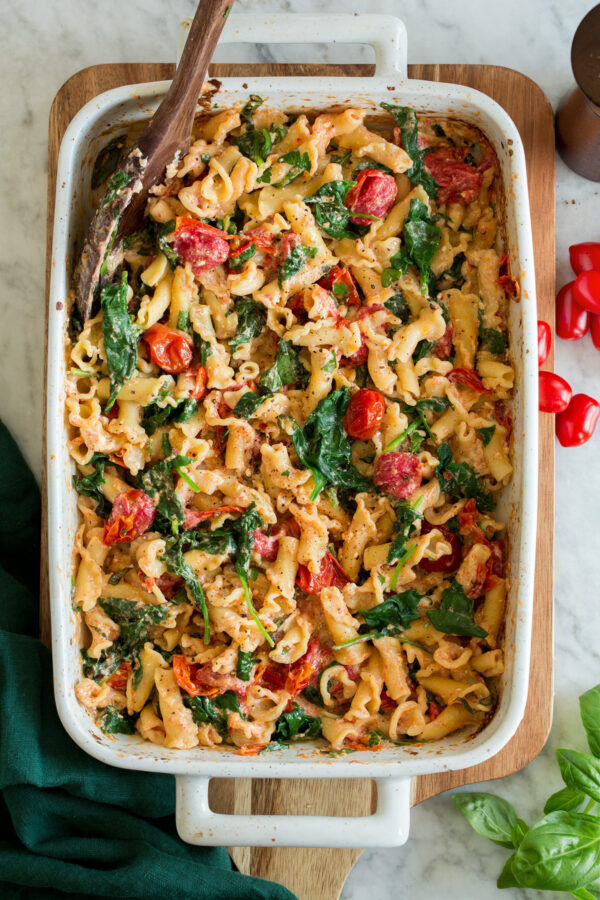

Baked Feta Pasta

Viral TikTok Baked Feta Pasta you'd fight a child over!
The ever so popular Baked Feta Pasta! It's a hearty
dish made with roasted tomatoes, creamy lightly tangy feta,
al dente pasta, and fresh spinach and herbs. One of the easiest and tastiest recipes!
Ingredients
2 pints (20 oz) grape tomatoes
5 medium garlic cloves, peeled and halved
1/2 cup extra-virgin olive oil
Salt and freshly ground black pepper
7 - 8 oz. block feta cheese (sheep's milk variety, such as Murray's), drained
10 oz. dry pasta such as campanelle, rigatoni, rotini, penne, bow tie, or cavatappi
8 oz. spinach, roughly chopped (8 packed cups)
1/4 cup thinly sliced fresh basil
2 Tbsp minced fresh parsley
1/4 tsp crushed red pepper flakes, or more to taste
1/2 cup reserved pasta water
Directions
Step 1
Preheat oven to 400 degrees
Step 2
Add grape tomatoes and garlic to a 3 quart baking dish.
Toss with olive oil and a few pinches of salt and pepper. Place feta in the center of tomatoes, turn to coat with oil.
Step 3
Bake in center of preheated oven for 30 minutes,
Then remove the baking dish, raise oven rack up to upper 1/3 of the oven. Return baking dish to oven and increase oven to 450
degrees. Bake until tomatoes and cheese are starting to brown slightly, about 10 minutes longer.
Step 4
Meanwhile boil pasta to al dente in salted water (I use 1 Tbsp salt and about 3 or 4 quarts of water), according to time listed on pasta package.
Reserve 1/2 cup pasta water and right before draining pour and submerge spinach in with the pasta (it should wilt almost instantly).
Drain pasta and spinach.
Step 5
Smash the tomatoes, garlic, oil and feta together with the back of a wooden spoon. Toss pasta in with mixture along with basil, parsley and red pepper flakes.
Thin mixture with a few tablespoons of pasta water at a time to reach desired consistency. Season with salt and pepper as needed. Serve warm.
Return To Homepage
|
Return To Top